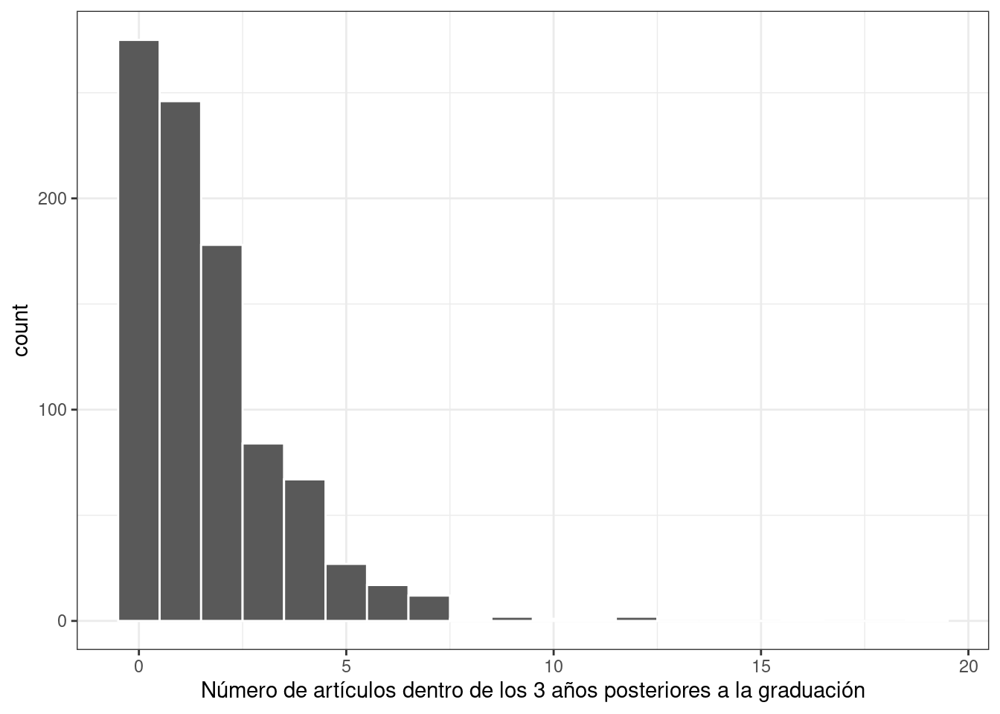
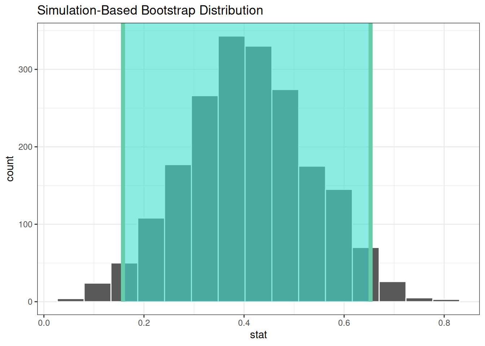
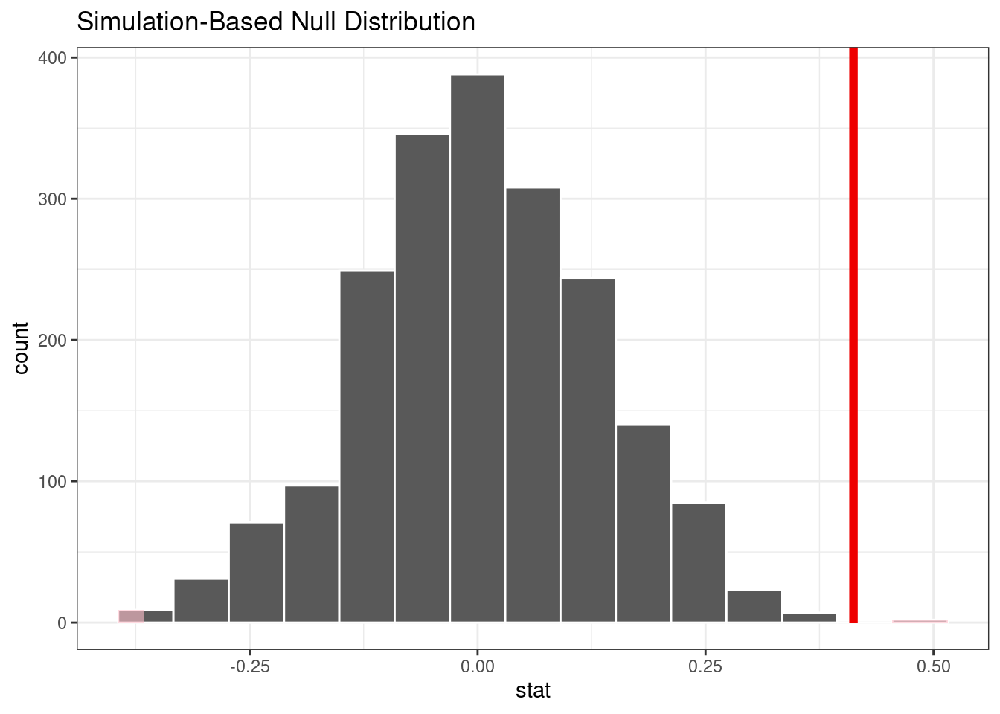
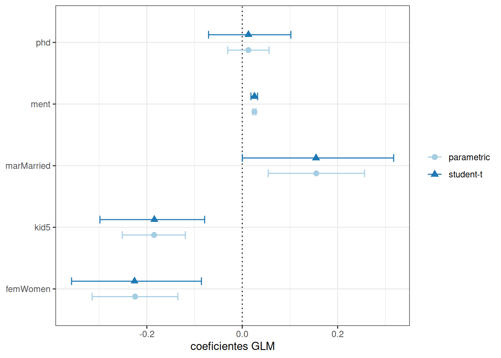
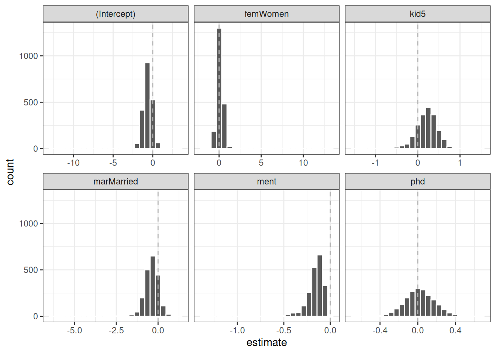

library(tidymodels)
tidymodels_prefer()
data("bioChemists", package = "pscl")
ggplot(bioChemists, aes(x = art)) +
geom_histogram(binwidth = 1, color = "white") +
labs(x = "Número de artículos dentro de los 3 años posteriores a la graduación")21 Análisis Inferencial
En Sección 1.2, describimos una taxonomía de modelos y dijimos que la mayoría de los modelos pueden clasificarse como descriptivos, inferenciales y/o predictivos.
La mayoría de los capítulos de este libro se han centrado en los modelos desde la perspectiva de la precisión de los valores predichos, una cualidad importante de los modelos para todos los propósitos, pero más relevante para los modelos predictivos. Los modelos inferenciales generalmente se crean no solo para sus predicciones, sino también para hacer inferencias o juicios sobre algún componente del modelo, como un valor de coeficiente u otro parámetro. Estos resultados se utilizan a menudo para responder algunas (con suerte) preguntas o hipótesis predefinidas. En los modelos predictivos, las predicciones sobre datos reservados se utilizan para validar o caracterizar la calidad del modelo. Los métodos inferenciales se centran en validar los supuestos probabilísticos o estructurales que se hacen antes de ajustar el modelo.
Por ejemplo, en la regresión lineal ordinaria, la suposición común es que los valores residuales son independientes y siguen una distribución gaussiana con una varianza constante. Si bien es posible que tenga conocimientos científicos o de dominio para dar credibilidad a este supuesto para el análisis de su modelo, los residuos del modelo ajustado generalmente se examinan para determinar si el supuesto fue una buena idea. Como resultado, los métodos para determinar si se han cumplido los supuestos del modelo no son tan simples como observar las predicciones de reserva, aunque eso también puede ser muy útil.
Usaremos valores p en este capítulo. Sin embargo, el marco de tidymodels tiende a promover intervalos de confianza sobre los valores p como método para cuantificar la evidencia de una hipótesis alternativa. Como se mostró anteriormente en Sección 11.4, los métodos bayesianos suelen ser superiores tanto a los valores p como a los intervalos de confianza en términos de facilidad de interpretación (pero pueden ser más costosos desde el punto de vista computacional).
En los últimos años ha habido un impulso para alejarse de los valores p en favor de otros métodos (Wasserstein y Lazar 2016). Consulte el Volumen 73 de The American Statistician para obtener más información y discusión.
En este capítulo, describimos cómo usar tidymodels para ajustar y evaluar modelos inferenciales. En algunos casos, el marco tidymodels puede ayudar a los usuarios a trabajar con los objetos producidos por sus modelos. En otros, puede ayudar a evaluar la calidad de un modelo determinado.
21.1 Inferencia Para Datos De Recuento
Para comprender cómo se pueden utilizar los paquetes tidymodels para el modelado inferencial, centrémonos en un ejemplo con datos de recuento. Usaremos datos de publicaciones de bioquímica del paquete pscl. Estos datos consisten en información sobre 915 Ph.D. se gradúan en bioquímica e intenta explicar los factores que impactan su productividad académica (medida a través del número o recuento de artículos publicados en tres años). Los predictores incluyen el género del graduado, su estado civil, el número de hijos del graduado que tengan al menos cinco años, el prestigio de su departamento y el número de artículos producidos por su mentor en el mismo período de tiempo. Los datos reflejan doctorados en bioquímica que terminaron su educación entre 1956 y 1963. Los datos son una muestra algo sesgada de todos los doctorados en bioquímica otorgados durante este período (basado en la integridad de la información).
Recuerde que en el Capítulo 19 hicimos la pregunta “¿Es nuestro modelo aplicable para predecir un punto de datos específico?” Es muy importante definir a qué poblaciones se aplica un análisis inferencial. Para estos datos, los resultados probablemente se aplicarían a los doctorados en bioquímica dados aproximadamente en el período en que se recopilaron los datos. ¿Se aplica también a otros tipos de doctorado en química (por ejemplo, química medicinal, etc.)? Éstas son preguntas importantes que se deben abordar (y documentar) al realizar análisis inferenciales.
Un gráfico de los datos mostrados en Figura 21.1 indica que muchos graduados no publicaron ningún artículo durante este tiempo y que el resultado sigue una distribución sesgada a la derecha:

Dado que los datos de los resultados son recuentos, la suposición de distribución más común es que el resultado tiene una distribución de Poisson. En este capítulo se utilizarán estos datos para varios tipos de análisis.
21.2 Comparaciones Con Pruebas De Dos Muestras
Podemos comenzar con la prueba de hipótesis. El objetivo del autor original con este conjunto de datos sobre publicaciones de bioquímica era determinar si existe una diferencia en las publicaciones entre hombres y mujeres (Long 1992). Los datos del estudio muestran:
bioChemists %>%
group_by(fem) %>%
summarize(counts = sum(art), n = length(art))
## # A tibble: 2 × 3
## fem counts n
## <fct> <int> <int>
## 1 Men 930 494
## 2 Women 619 421Había muchas más publicaciones de hombres, aunque también había más hombres en los datos. El enfoque más simple para analizar estos datos sería hacer una comparación de dos muestras usando la función poisson.test() en el paquete stats. Requiere los conteos para uno o dos grupos.
Para nuestra aplicación, las hipótesis para comparar los dos sexos son:
\[\begin{align} H_0&: \lambda_m = \lambda_f \notag \\ H_a&: \lambda_m \ne \lambda_f \notag \end{align}\]donde los valores \(\lambda\) son las tasas de publicaciones (durante el mismo período de tiempo).
Una aplicación básica de la prueba es:Una aplicación básica de la prueba es:1
poisson.test(c(930, 619), T = 3)
##
## Comparison of Poisson rates
##
## data: c(930, 619) time base: 3
## count1 = 930, expected count1 = 774, p-value = 3e-15
## alternative hypothesis: true rate ratio is not equal to 1
## 95 percent confidence interval:
## 1.356 1.666
## sample estimates:
## rate ratio
## 1.502La función informa un valor p así como un intervalo de confianza para la relación de las tasas de publicación. Los resultados indican que la diferencia observada es mayor que el ruido experiencial y favorece a \(H_a\).
Un problema con el uso de esta función es que los resultados regresan como un objeto “htest”. Si bien este tipo de objeto tiene una estructura bien definida, puede resultar difícil consumirlo para operaciones posteriores, como informes o visualizaciones. La herramienta más impactante que ofrece tidymodels para modelos inferenciales son las funciones tidy() en el paquete broom. Como se vio anteriormente, esta función crea un tibble bien formado y con un nombre predecible a partir del objeto. Podemos tidy() los resultados de nuestra prueba de comparación de dos muestras:
poisson.test(c(930, 619)) %>%
tidy()
## # A tibble: 1 × 8
## estimate statistic p.value parameter conf.low conf.high method alternative
## <dbl> <dbl> <dbl> <dbl> <dbl> <dbl> <chr> <chr>
## 1 1.50 930 2.73e-15 774. 1.36 1.67 Comparison o… two.sidedEntre broom y broom.mixed, existen métodos tidy() para más de 150 modelos.
Si bien la distribución de Poisson es razonable, es posible que también deseemos evaluarla utilizando menos supuestos distributivos. Dos métodos que podrían resultar útiles son las pruebas de arranque y de permutación (Davison y Hinkley 1997).
El paquete infer, parte del marco tidymodels, es una herramienta poderosa e intuitiva para probar hipótesis (Ismay y Kim 2021). Su sintaxis es concisa y está diseñada para no estadísticos.
Primero, specify() que usaremos la diferencia en el número medio de artículos entre los sexos y luego calculate() la estadística a partir de los datos. Recuerde que el estimador de máxima verosimilitud para la media de Poisson es la media muestral. Las hipótesis probadas aquí son las mismas que las de la prueba anterior (pero se llevan a cabo mediante un procedimiento de prueba diferente).
Con infer, especificamos el resultado y la covariable, luego indicamos la estadística de interés:
library(infer)
observed <-
bioChemists %>%
specify(art ~ fem) %>%
calculate(stat = "diff in means", order = c("Men", "Women"))
observed
## Response: art (numeric)
## Explanatory: fem (factor)
## # A tibble: 1 × 1
## stat
## <dbl>
## 1 0.412A partir de aquí, calculamos un intervalo de confianza para esta media creando la distribución de arranque mediante generate(); se calcula la misma estadística para cada versión remuestreada de los datos:
set.seed(2101)
bootstrapped <-
bioChemists %>%
specify(art ~ fem) %>%
generate(reps = 2000, type = "bootstrap") %>%
calculate(stat = "diff in means", order = c("Men", "Women"))
bootstrapped
## Response: art (numeric)
## Explanatory: fem (factor)
## # A tibble: 2,000 × 2
## replicate stat
## <int> <dbl>
## 1 1 0.467
## 2 2 0.107
## 3 3 0.467
## 4 4 0.308
## 5 5 0.369
## 6 6 0.428
## # ℹ 1,994 more rowsUn intervalo percentil se calcula usando:
percentile_ci <- get_ci(bootstrapped)
percentile_ci
## # A tibble: 1 × 2
## lower_ci upper_ci
## <dbl> <dbl>
## 1 0.158 0.653El paquete infer tiene una API de alto nivel para mostrar los resultados del análisis, como se muestra en Figura 21.2.
visualize(bootstrapped) +
shade_confidence_interval(endpoints = percentile_ci)

Dado que el intervalo visualizado en Figura 21.2 no incluye cero, estos resultados indican que los hombres han publicado más artículos que las mujeres.
Si requerimos un valor p, el paquete infer puede calcular el valor mediante una prueba de permutación, que se muestra en el siguiente código. La sintaxis es muy similar al código de arranque que usamos anteriormente. Agregamos un verbo hypothesize() para indicar el tipo de suposición a probar y la llamada generate() contiene una opción para mezclar los datos.
set.seed(2102)
permuted <-
bioChemists %>%
specify(art ~ fem) %>%
hypothesize(null = "independence") %>%
generate(reps = 2000, type = "permute") %>%
calculate(stat = "diff in means", order = c("Men", "Women"))
permuted
## Response: art (numeric)
## Explanatory: fem (factor)
## Null Hypothesis: independence
## # A tibble: 2,000 × 2
## replicate stat
## <int> <dbl>
## 1 1 0.201
## 2 2 -0.133
## 3 3 0.109
## 4 4 -0.195
## 5 5 -0.00128
## 6 6 -0.102
## # ℹ 1,994 more rowsEl siguiente código de visualización también es muy similar al enfoque de arranque. Este código genera Figura 21.3 donde la línea vertical indica el valor observado:
visualize(permuted) +
shade_p_value(obs_stat = observed, direction = "two-sided")

The actual p-value is:
permuted %>%
get_p_value(obs_stat = observed, direction = "two-sided")
## # A tibble: 1 × 1
## p_value
## <dbl>
## 1 0.002La línea vertical que representa la hipótesis nula en Figura 21.3 está muy lejos de la distribución de permutación. Esto significa que, si de hecho la hipótesis nula fuera cierta, la probabilidad de observar datos al menos tan extremos como los que tenemos a mano es extremadamente pequeña.
Las pruebas de dos muestras que se muestran en esta sección probablemente no sean óptimas porque no tienen en cuenta otros factores que podrían explicar la relación observada entre la tasa de publicación y el sexo. Pasemos a un modelo más complejo que pueda considerar covariables adicionales.
21.3 Modelos log-lineales
El resto de este capítulo se centrará en un modelo lineal generalizado (Dobson 1999) donde asumimos que los recuentos siguen una distribución de Poisson. Para este modelo, las covariables/predictores ingresan al modelo de forma log-lineal:
\[ \log(\lambda) = \beta_0 + \beta_1x_1 + \ldots + \beta_px_p \]
donde \(\lambda\) es el valor esperado de los recuentos.
Ajustemos un modelo simple que contenga todas las columnas predictoras. El paquete poissonreg, un paquete de extensión parsnip en tidymodels, se ajustará a esta especificación de modelo:
library(poissonreg)
# El motor predeterminado es 'glm'
log_lin_spec <- poisson_reg()
log_lin_fit <-
log_lin_spec %>%
fit(art ~ ., data = bioChemists)
log_lin_fit
## parsnip model object
##
##
## Call: stats::glm(formula = art ~ ., family = stats::poisson, data = data)
##
## Coefficients:
## (Intercept) femWomen marMarried kid5 phd ment
## 0.3046 -0.2246 0.1552 -0.1849 0.0128 0.0255
##
## Degrees of Freedom: 914 Total (i.e. Null); 909 Residual
## Null Deviance: 1820
## Residual Deviance: 1630 AIC: 3310El método tidy() resume sucintamente los coeficientes del modelo (junto con intervalos de confianza del 90%):
tidy(log_lin_fit, conf.int = TRUE, conf.level = 0.90)
## # A tibble: 6 × 7
## term estimate std.error statistic p.value conf.low conf.high
## <chr> <dbl> <dbl> <dbl> <dbl> <dbl> <dbl>
## 1 (Intercept) 0.305 0.103 2.96 3.10e- 3 0.134 0.473
## 2 femWomen -0.225 0.0546 -4.11 3.92e- 5 -0.315 -0.135
## 3 marMarried 0.155 0.0614 2.53 1.14e- 2 0.0545 0.256
## 4 kid5 -0.185 0.0401 -4.61 4.08e- 6 -0.251 -0.119
## 5 phd 0.0128 0.0264 0.486 6.27e- 1 -0.0305 0.0563
## 6 ment 0.0255 0.00201 12.7 3.89e-37 0.0222 0.0288En este resultado, los valores p corresponden a pruebas de hipótesis separadas para cada parámetro:
\[\begin{align} H_0&: \beta_j = 0 \notag \\ H_a&: \beta_j \ne 0 \notag \end{align}\]para cada uno de los parámetros del modelo. Al observar estos resultados, es posible que el phd (el prestigio de su departamento) no tenga ninguna relación con el resultado.
Si bien la distribución de Poisson es el supuesto habitual para datos como estos, puede resultar beneficioso realizar una verificación aproximada de los supuestos del modelo ajustando los modelos sin utilizar la probabilidad de Poisson para calcular los intervalos de confianza. El paquete rsample tiene una función conveniente para calcular intervalos de confianza de arranque para los modelos lm() y glm(). Podemos usar esta función, mientras declaramos explícitamente family = poisson, para calcular una gran cantidad de ajustes del modelo. De forma predeterminada, calculamos un intervalo bootstrap-t de confianza del 90% (los intervalos percentiles también están disponibles):
set.seed(2103)
glm_boot <-
reg_intervals(art ~ ., data = bioChemists, model_fn = "glm", family = poisson)
glm_boot
## # A tibble: 5 × 6
## term .lower .estimate .upper .alpha .method
## <chr> <dbl> <dbl> <dbl> <dbl> <chr>
## 1 femWomen -0.358 -0.226 -0.0856 0.05 student-t
## 2 kid5 -0.298 -0.184 -0.0789 0.05 student-t
## 3 marMarried 0.000264 0.155 0.317 0.05 student-t
## 4 ment 0.0182 0.0256 0.0322 0.05 student-t
## 5 phd -0.0707 0.0130 0.102 0.05 student-tCuando comparamos estos resultados (en Figura 21.4) con los resultados puramente paramétricos de glm(), los intervalos de arranque son algo más amplios. Si los datos fueran verdaderamente de Poisson, estos intervalos tendrían anchos más similares.

Determinar qué predictores incluir en el modelo es un problema difícil. Un enfoque consiste en realizar pruebas de índice de verosimilitud (LRT) (McCullagh y Nelder 1989) entre modelos anidados. Según los intervalos de confianza, tenemos evidencia de que un modelo más simple sin phd puede ser suficiente. Ajustemos un modelo más pequeño y luego realicemos una prueba estadística:
Esta hipótesis se probó previamente cuando mostramos los resultados ordenados de log_lin_fit. Ese enfoque particular utilizó resultados de un ajuste de modelo único mediante una estadística de Wald (es decir, el parámetro dividido por su error estándar). Para ese enfoque, el valor p era 0.63. Podemos ordenar los resultados del LRT para obtener el valor p:
log_lin_reduced <-
log_lin_spec %>%
fit(art ~ ment + kid5 + fem + mar, data = bioChemists)
anova(
extract_fit_engine(log_lin_reduced),
extract_fit_engine(log_lin_fit),
test = "LRT"
) %>%
tidy()
## # A tibble: 2 × 6
## term df.residual residual.deviance df deviance p.value
## <chr> <dbl> <dbl> <dbl> <dbl> <dbl>
## 1 art ~ ment + kid5 + fem + mar 910 1635. NA NA NA
## 2 art ~ fem + mar + kid5 + phd… 909 1634. 1 0.236 0.627Los resultados son los mismos y, en base a estos y al intervalo de confianza para este parámetro, excluiremos phd de análisis adicionales ya que no parece estar asociado con el resultado.
21.4 Un Modelo Más Complejo
Podemos pasar a modelos aún más complejos dentro de nuestro enfoque de tidymodels. Para los datos de recuento, hay ocasiones en las que el número de recuentos de ceros es mayor de lo que prescribiría una distribución de Poisson simple. Un modelo más complejo apropiado para esta situación es el modelo de Poisson (ZIP) con inflación cero; consulte Mullahy (1986), Lambert (1992) y Zeileis, Kleiber, y Jackman (2008). Aquí, hay dos conjuntos de covariables: uno para los datos de recuento y otros que afectan la probabilidad (indicada como \(\pi\)) de ceros. La ecuación para la media \(\lambda\) es:
\[\lambda = 0 \pi + (1 - \pi) \lambda_{nz}\]
donde
\[\begin{align} \log(\lambda_{nz}) &= \beta_0 + \beta_1x_1 + \ldots + \beta_px_p \notag \\ \log\left(\frac{\pi}{1-\pi}\right) &= \gamma_0 + \gamma_1z_1 + \ldots + \gamma_qz_q \notag \end{align}\]y las covariables \(x\) afectan los valores de recuento, mientras que las covariables \(z\) influyen en la probabilidad de un cero. No es necesario que los dos conjuntos de predictores sean mutuamente excluyentes.
Ajustaremos un modelo con un conjunto completo de covariables \(z\):
zero_inflated_spec <- poisson_reg() %>% set_engine("zeroinfl")
zero_inflated_fit <-
zero_inflated_spec %>%
fit(art ~ fem + mar + kid5 + ment | fem + mar + kid5 + phd + ment,
data = bioChemists)
zero_inflated_fit
## parsnip model object
##
##
## Call:
## pscl::zeroinfl(formula = art ~ fem + mar + kid5 + ment | fem + mar + kid5 +
## phd + ment, data = data)
##
## Count model coefficients (poisson with log link):
## (Intercept) femWomen marMarried kid5 ment
## 0.621 -0.209 0.105 -0.143 0.018
##
## Zero-inflation model coefficients (binomial with logit link):
## (Intercept) femWomen marMarried kid5 phd ment
## -0.6086 0.1093 -0.3529 0.2195 0.0124 -0.1351Dado que los coeficientes de este modelo también se estiman utilizando la máxima verosimilitud, intentemos utilizar otra prueba de razón de verosimilitud para comprender si los términos del nuevo modelo son útiles. Simultáneamente probaremos que:
\[\begin{align} H_0&: \gamma_1 = 0, \gamma_2 = 0, \cdots, \gamma_5 = 0 \notag \\ H_a&: \text{at least one } \gamma \ne 0 \notag \end{align}\]Probemos ANOVA nuevamente:
anova(
extract_fit_engine(zero_inflated_fit),
extract_fit_engine(log_lin_reduced),
test = "LRT"
) %>%
tidy()
## Error in UseMethod("anova"): no applicable method for 'anova' applied to an object of class "zeroinfl"¡No se implementa un método anova() para objetos zeroinfl!
Una alternativa es utilizar una estadística de criterio de información, como el criterio de información de Akaike (AIC) (Claeskens 2016). Esto calcula la probabilidad logarítmica (del conjunto de entrenamiento) y penaliza ese valor según el tamaño del conjunto de entrenamiento y la cantidad de parámetros del modelo. En la parametrización de R, los valores AIC más pequeños son mejores. En este caso, no estamos realizando una prueba estadística formal sino estimando la capacidad de los datos para ajustarse a los datos.
Los resultados indican que el modelo ZIP es preferible:
zero_inflated_fit %>% extract_fit_engine() %>% AIC()
## [1] 3232
log_lin_reduced %>% extract_fit_engine() %>% AIC()
## [1] 3312Sin embargo, es difícil contextualizar este par de valores individuales y evaluar cuán diferentes son en realidad. Para resolver este problema, volveremos a muestrear una gran cantidad de cada uno de estos dos modelos. A partir de estos, podemos calcular los valores AIC para cada uno y determinar con qué frecuencia los resultados favorecen el modelo ZIP. Básicamente, caracterizaremos la incertidumbre de las estadísticas del AIC para medir su diferencia en relación con el ruido en los datos.
También calcularemos más intervalos de confianza de arranque para los parámetros en un momento, por lo que especificamos la opción apparent = TRUE al crear las muestras de arranque. Esto es necesario para algunos tipos de intervalos.
Primero, creamos los 4000 ajustes del modelo:
zip_form <- art ~ fem + mar + kid5 + ment | fem + mar + kid5 + phd + ment
glm_form <- art ~ fem + mar + kid5 + ment
set.seed(2104)
bootstrap_models <-
bootstraps(bioChemists, times = 2000, apparent = TRUE) %>%
mutate(
glm = map(splits, ~ fit(log_lin_spec, glm_form, data = analysis(.x))),
zip = map(splits, ~ fit(zero_inflated_spec, zip_form, data = analysis(.x)))
)
bootstrap_models
## # Bootstrap sampling with apparent sample
## # A tibble: 2,001 × 4
## splits id glm zip
## <list> <chr> <list> <list>
## 1 <split [915/355]> Bootstrap0001 <fit[+]> <fit[+]>
## 2 <split [915/333]> Bootstrap0002 <fit[+]> <fit[+]>
## 3 <split [915/337]> Bootstrap0003 <fit[+]> <fit[+]>
## 4 <split [915/344]> Bootstrap0004 <fit[+]> <fit[+]>
## 5 <split [915/351]> Bootstrap0005 <fit[+]> <fit[+]>
## 6 <split [915/354]> Bootstrap0006 <fit[+]> <fit[+]>
## # ℹ 1,995 more rowsAhora podemos extraer los ajustes del modelo y sus correspondientes valores AIC:
bootstrap_models <-
bootstrap_models %>%
mutate(
glm_aic = map_dbl(glm, ~ extract_fit_engine(.x) %>% AIC()),
zip_aic = map_dbl(zip, ~ extract_fit_engine(.x) %>% AIC())
)
mean(bootstrap_models$zip_aic < bootstrap_models$glm_aic)
## [1] 1A partir de estos resultados, parece definitivo que tener en cuenta el número excesivo de conteos de cero es una buena idea.
Podríamos haber usado fit_resamples() o un conjunto de flujo de trabajo para realizar estos cálculos. En esta sección, usamos mutate() y map() para calcular los modelos y demostrar cómo se pueden usar las herramientas tidymodels para modelos que no son compatibles con uno de los paquetes parsnip.
Dado que hemos calculado los ajustes del modelo remuestreado, creemos intervalos de arranque para los coeficientes del modelo de probabilidad cero (es decir, \(\gamma_j\)). Podemos extraerlos con el método tidy() y usar la opción type = "zero" para obtener estas estimaciones:
bootstrap_models <-
bootstrap_models %>%
mutate(zero_coefs = map(zip, ~ tidy(.x, type = "zero")))
# One example:
bootstrap_models$zero_coefs[[1]]
## # A tibble: 6 × 6
## term type estimate std.error statistic p.value
## <chr> <chr> <dbl> <dbl> <dbl> <dbl>
## 1 (Intercept) zero -0.128 0.497 -0.257 0.797
## 2 femWomen zero -0.0763 0.319 -0.240 0.811
## 3 marMarried zero -0.112 0.365 -0.307 0.759
## 4 kid5 zero 0.270 0.186 1.45 0.147
## 5 phd zero -0.178 0.132 -1.35 0.177
## 6 ment zero -0.123 0.0315 -3.91 0.0000936Es una buena idea visualizar las distribuciones de arranque de los coeficientes, como en Figura 21.5.
bootstrap_models %>%
unnest(zero_coefs) %>%
ggplot(aes(x = estimate)) +
geom_histogram(bins = 25, color = "white") +
facet_wrap(~ term, scales = "free_x") +
geom_vline(xintercept = 0, lty = 2, color = "gray70")

Una de las covariables (ment) que parece ser importante tiene una distribución muy sesgada. El espacio extra en algunas de las facetas indica que hay algunos valores atípicos en las estimaciones. Esto podría ocurrir cuando los modelos no convergieran; esos resultados probablemente deberían excluirse de las nuevas muestras. Para los resultados visualizados en Figura 21.5, los valores atípicos se deben únicamente a estimaciones extremas de parámetros; todos los modelos convergieron.
El paquete rsample contiene un conjunto de funciones denominadas int_*() que calculan diferentes tipos de intervalos de arranque. Dado que el método tidy() contiene estimaciones de error estándar, se pueden calcular los intervalos bootstrap-t. También calcularemos los intervalos percentiles estándar. De forma predeterminada, se calculan intervalos de confianza del 90%.
bootstrap_models %>% int_pctl(zero_coefs)
## # A tibble: 6 × 6
## term .lower .estimate .upper .alpha .method
## <chr> <dbl> <dbl> <dbl> <dbl> <chr>
## 1 (Intercept) -1.76 -0.624 0.420 0.05 percentile
## 2 femWomen -0.523 0.116 0.818 0.05 percentile
## 3 kid5 -0.327 0.217 0.677 0.05 percentile
## 4 marMarried -1.20 -0.381 0.362 0.05 percentile
## 5 ment -0.401 -0.162 -0.0515 0.05 percentile
## 6 phd -0.274 0.0229 0.333 0.05 percentile
bootstrap_models %>% int_t(zero_coefs)
## # A tibble: 6 × 6
## term .lower .estimate .upper .alpha .method
## <chr> <dbl> <dbl> <dbl> <dbl> <chr>
## 1 (Intercept) -1.61 -0.624 0.332 0.05 student-t
## 2 femWomen -0.486 0.116 0.671 0.05 student-t
## 3 kid5 -0.211 0.217 0.599 0.05 student-t
## 4 marMarried -0.988 -0.381 0.293 0.05 student-t
## 5 ment -0.322 -0.162 -0.0275 0.05 student-t
## 6 phd -0.276 0.0229 0.291 0.05 student-tA partir de estos resultados, podemos tener una buena idea de qué predictores incluir en el modelo de probabilidad de conteo cero. Puede ser sensato reajustar un modelo más pequeño para evaluar si la distribución de arranque para “ment” todavía está sesgada.
21.5 Más Análisis Inferencial
Este capítulo demostró solo un pequeño subconjunto de lo que está disponible para el análisis inferencial en modelos tidy y se ha centrado en los métodos frecuentistas y de remuestreo. Podría decirse que el análisis bayesiano es un enfoque de inferencia muy eficaz y, a menudo, superior. Hay una variedad de modelos bayesianos disponibles a través de parsnip. Además, el paquete multilevelmod permite a los usuarios ajustarse a modelos jerárquicos bayesianos y no bayesianos (por ejemplo, modelos mixtos). Los paquetes broom.mixed y tidybayes son excelentes herramientas para extraer datos para gráficos y resúmenes. Finalmente, para conjuntos de datos con una única jerarquía, como datos de medidas longitudinales o repetidas simples, la función group_vfold_cv() de rsample facilita caracterizaciones directas fuera de la muestra del rendimiento del modelo.
21.6 Resumen Del Capítulo
El marco tidymodels sirve para algo más que el modelado predictivo. Los paquetes y funciones de tidymodels se pueden utilizar para probar hipótesis, así como para ajustar y evaluar modelos inferenciales. El marco tidymodels brinda soporte para trabajar con modelos R que no son tidymodels y puede ayudar a evaluar las cualidades estadísticas de sus modelos.
El argumento
Tnos permite dar cuenta del tiempo en que se contaron los eventos (publicaciones), que fue de tres años tanto para hombres como para mujeres. Hay más hombres que mujeres en estos datos, peropoisson.test()tiene una funcionalidad limitada, por lo que se pueden utilizar análisis más sofisticados para explicar esta diferencia.↩︎